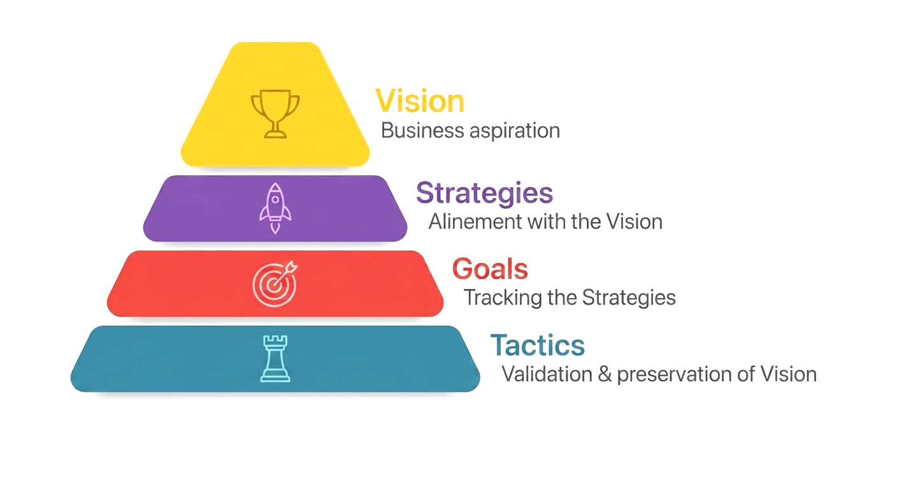
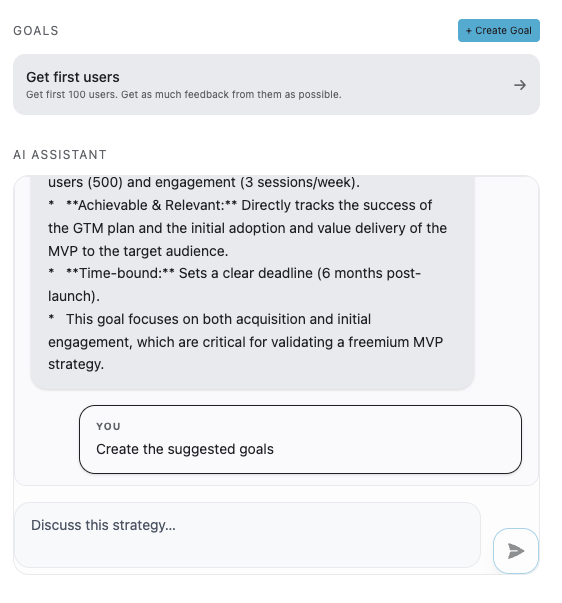

Stop managing tasks. Start commanding an AI team.
Florque is the first graph-native operating system that lets you spawn autonomous AI experts. Link your vision, strategy, and execution in one living map, and watch your business build itself.
The "Solo" ceiling is a myth.
Most solo founders hit a wall because they try to be the CEO, the strategist, and the worker simultaneously. You’re not limited by your ideas; you’re limited by your bandwidth.
The Shift
Stop treating AI like a chatbot that needs constant babysitting. Florque harnesses autonomous experts that live in your project’s context. They don't just "complete tickets"—they own the strategy, execute the tactics, and evolve your vision.

Florque is built differently
Every piece of work lives inside a structure that preserves its reason for existing — so when you pick up a task two weeks later, you don't just see what to do. You see why it matters, what goal it serves, and whether that goal still makes sense.
Every project in Florque is structured around VSGT — Vision, Strategy, Goals, Tasks. When something shifts at any level, the impact on everything below it is immediately visible.
Keep the project context alive
The VSGT Framework — Vision, Strategy, Goals, Tasks — isn't another complex system to learn. It's a natural descent from the abstract to the concrete, healing the ticket-vs-reality gap once and for all.
- check_circle Context that survives execution: Every task carries its Goal and Strategy with it through the entire delivery cycle.
- hub AI Anomaly detection across the graph: Florque continuously surfaces orphaned tasks, uncovered Goals, and misaligned priorities.
- auto_awesome AI task generation grounded in your plan: Derive realistic, high-priority work directly from your active Strategy.
- verified Context validation at every level: Checks whether tasks still serve active objectives as priorities evolve.
- tune Agentic estimations: Draft Goal structures and task breakdowns reflecting your actual team velocity.

Your Project Management Copilot
You start the project from your vision, strategies and goals. Florque generates task breakdowns, suggests improvements, and warns about operational bottlenecks.
The Brain (Work Graph)
Your project is a lineage, not a list. Our graph-native engine ensures every action you take is anchored to your North Star.

The Team (Agentic Harnessing)
Spawn specialized AI experts on-demand. From marketing strategists to backend engineers, each agent inherits your project’s entire context.

The Pulse (VSGT Governance)
Ensure your agents aren't just working—they're winning. Every output is filtered through your Vision-Strategy-Goal framework to prevent strategic drift.

The Florque Evolution
From personal clarity to agentic orchestration. We are building the neural network of your future company.
The Strategic Pilot
Fix your day. A smart ticket manager for solo founders. Turn the "vague fog" into a crisp work graph where every task is a direct line to your goal.
The Context Engine
Fix your team. An AI Project Manager that monitors "blast impact" and eliminates implementation drift across shared strategies.
Business OS
The Company’s Brain. A central kernel for agentic orchestration. Total context preservation for autonomous execution via AI agents.
Explore Other Studio Works
Stop managing. Start commanding.
Connect your vision directly to autonomous agents and experience graph-native project operations.